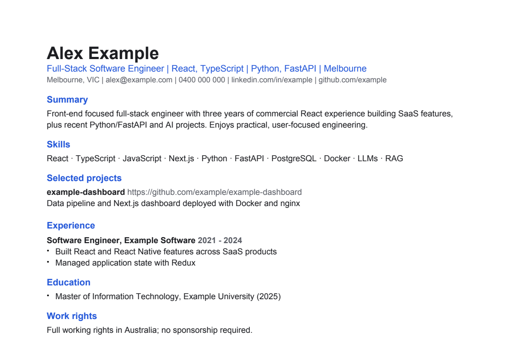

Your AI job-search copilot for Australian tech roles
Every week, the best-fit Melbourne tech jobs land in Telegram, and one tap gets you a tailored CV and cover letter.
80/100 · Mid Front End Developer
✅ 3 years of commercial React, the core of the role
✅ TypeScript and Next.js both listed in the advert
⚠️ Asks for GraphQL, which isn't in your profile
⚠️ Design-system experience is a nice-to-have
Three steps, about five minutes a week
JobPilot does the reading, screening and drafting. The decisions, and the final click, stay with you.
-
Upload your CV
Send your CV as a PDF to the JobPilot bot. Claude turns it into a profile you can check. The file itself isn't kept, and the profile is encrypted.
Once, in 2 minutes -
Get weekly matches
New Melbourne tech jobs are scored 0–100 against your profile. The best arrive in Telegram with the reasons they fit and the gaps to know about.
Sundays at 7am -
Approve for a kit
Tap Approve and get an application kit: a tailored CV, a cover letter and paste-ready screening answers. You apply on the employer's site.
One tap per job
Tailored to the job, built from your own profile
Claude chooses what to lead with for each role. Every fact on the page comes from your profile, never from the model.
-
Tailored CV (PDF)Summary, skill order and featured projects chosen for this job.
-
Cover letter (PDF)180–260 words, with anything it couldn't verify listed for you to check.
-
Screening answersWhy this role, work rights, notice period and salary, ready to paste.


Generated by JobPilot for a fictional example profile.
Built to help you apply well, not apply everywhere
You approve everything
JobPilot never applies, sends emails or fills in forms for you. Nothing happens to a job until you tap Approve, and you submit it yourself.
Grounded in your profile
It never invents experience. The CV is built only from your profile, and skills or projects that aren't in it are dropped before anything reaches an employer.
Private and deletable
Your CV file isn't stored and your profile is encrypted at rest. Send /deleteme and everything about you is removed.
Visa and work-rights aware
Scoring flags citizenship, security-clearance and sponsorship requirements, and you can skip adverts that ask for them. Your work-rights statement goes in every kit.
Questions, answered
How much does it cost?
Nothing. JobPilot is free during the beta. Places are invite-only while it's tested with a small group, so request an invite in Telegram and you'll hear back there.
Which jobs does it cover?
IT and software roles in Melbourne, sourced from Adzuna. More Australian cities are planned.
What do you store about me?
The profile Claude builds from your CV (encrypted at rest), your matches, the status of each application and your Telegram chat id. The CV file itself is not stored.
To score and draft, your profile text is sent to Anthropic's Claude API. Send /deleteme to remove everything. The privacy page has the details.
Will it apply to jobs for me?
No, by design. Job boards prohibit automated applications, and recruiters can spot a mass-applied one. JobPilot prepares a strong, tailored application. You check it and submit it yourself.
Can it make things up on my CV?
No. The model only chooses emphasis: the summary wording, which skills lead and which projects come first. Every fact comes from your own profile, and the cover letter lists anything it couldn't verify for you to check before sending.
Spend your week on interviews, not job boards
Request an invite in Telegram. When a place opens, you'll upload your CV and get your first matches the following Sunday.
Request an invite